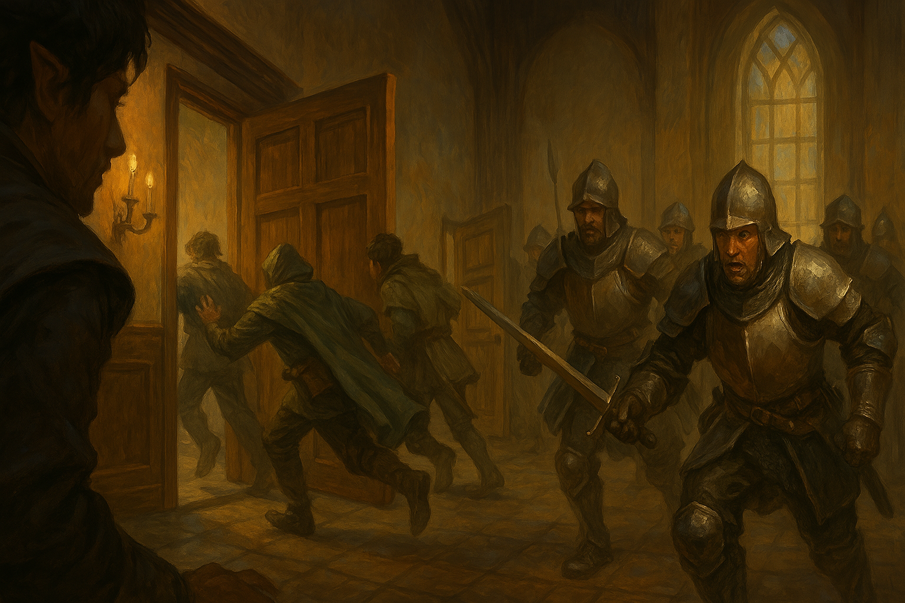

Chapter 4: Between Life and Death
Korringfield Reunion


Korringfield Reunion
15048.10.02
回到弗列里爵士家，晚餐前的大廳，大家不見帕拉丁的身影。YHWH想起帕拉丁說過他會在晚餐前回來。眾人決定回到市中心尋找帕拉丁，而龍恩則決定待在爵士宅邸等候。
大家從餐廳拿了廚師準備的麵包後便上路。有些人前往酒館「喝醉角落」，想打聽些消息，也看看曾經遇到的神秘老太太是否在那裡，也許能問出些什麼，卻不見他的人影。其他人到了帕拉丁與YHWH分開的七彩天堂前，一樣沒有收穫。大家會合後，薩梅爾決定讓酷爆出來聞聞看帕拉丁的味道，他們因此走進了一處巷弄內。
巷弄分成三條小路，大家不知道哪一條比較有可能是帕拉丁的去處。雷米爬上附近房子的屋頂，從高處眺望。其他人兵分三路，向前探尋。薩梅爾意外遇上了兩名壯碩的男子，一名披著獸皮的野蠻人，以及一名戴著頭盔的聖騎士。兩人認出了薩梅爾以及後續趕上的冒險者們，便是傳單上提及的「沃瓦倫的惡魔」，威脅他們離開寇林菲爾德，他們會去向王國通報。情急之下，冒險者們攻擊了兩名男子，將他們兩人擊暈。思索著該如何處理他們的軀體，兩名衛兵逐漸逼近，冒險者們只好將衛兵殺死，也將野蠻人殺死，並偽裝成兩邊互相殺害的場面，把唯一倖存的聖騎士偷偷運回爵士宅邸。
另一方面，在冒險者們外出尋找帕拉丁的同時，龍恩聽見了宅邸門口傳來了撞擊聲。小心開門後，他看見了帕拉丁倒臥在門前，手上拿了一罐紅色的藥水。龍恩深感好奇，打開藥水蓋子，淺嚐了一口，十分辛辣。同時，龍恩也注意到帕拉丁的臉上有個很大的包紮，蓋住了他過度平坦的左耳。紗布下，還多了一個彎月的符號印在皮膚上。在弗列里爵士的協助下，兩人讓帕拉丁躺臥在大廳沙發上，而龍恩則將這罐神秘的藥水收在自己包包內。
當所有人回來後，大家把聖騎士搬到烏犧奧泥房內綑綁，並試圖喚醒帕拉丁。大家把帕拉丁也帶回烏犧奧泥房間。在帕拉丁清醒後，他認得了被綑綁並剝光衣物的聖騎士，是他的二哥，帕斯卡。他也想起自己透過儀式製作的藥水，向龍恩拿回後，眾人便又出發前往帕拉丁的老家，留下薩梅爾和家亨負責看守帕斯卡。
爵士帶著大家一起前往帕拉丁的老家。敲了門後，老管家很訝異大半夜有一群人跑來，但是看到了帕拉丁後，還是讓大家都進門了。帕拉丁快速地到了二樓父親的房間，和哈洛威醫師溝通後，讓父親喝下了藥水。父親突然昏了過去，不過經過哈洛威醫師的確認後，帕拉丁的父親只是深深地睡著了。
除了帕拉丁外，眾人到了一樓大廳休息，而帕拉丁則留下來和醫生討論。醫生質疑帕拉丁太過衝動，萬一害死他的父親該怎麼辦？帕拉丁表示哈洛威醫師看起來也沒辦法把他父親治好，不如「死人當活人醫」。
帕拉丁也回到了自己過去的房間，翻箱倒櫃，找到了一些金幣的私房錢帶在身上，便回到一樓和大家會合，走回爵士家。
15048.10.03
眾人醒來時，已經接近中午時間了。宅邸靜悄悄的，大家自行前往了餐廳用餐，卻沒看見爵士和爵士夫人。吃飽後，大家敲了敲爵士和夫人的房間，沒有回應，進到房間後，也沒有看見人。大家回到烏犧奧泥房間，思索著該如何處置帕斯卡時，似乎聽見了遠方有人逼近的聲音。
大家跑到一樓，倉皇著該怎麼做，已經有一群穿著重甲的衛兵踏了進來，大家只好朝著餐廳的方向逃竄。雷米找到了餐廳後方有一扇小門，大家依序逃走，走在最後的家亨卻被衛兵從後方抓走了。過了一段時間，雷米偷偷開了後門，發現衛兵都背對著他，朝大廳走去，他便小心尾隨著，看見至少有20名以上的重甲衛兵，在大廳圍繞著家亨。他們似乎在討論著關於王國、帝國之類的事。雷米也只好先離開了。
大家在爵士家後方討論著該怎麼做，也聽見了爵士家正門開始有了聲音。衛兵們似乎壓著家亨離開了。大家決定先前往帕拉丁的老家躲藏，而雷米則潛行後跟隨著最後幾名衛兵，到了市中心。
其他人來到帕拉丁的老家後，看見帕拉丁的父親馬格努斯爵士神清氣爽地從二樓走了下來，帕拉丁鬆了一口氣。大家尋求馬格努斯爵士的幫助，馬個努斯爵士則吩咐管家準備一輛馬車，載大家離開。帕拉丁向父親詢問，應該前往王國還是帝國比較安全？馬格努斯爵士表示自己在王國比較有人脈，甚至報上他親生母親的名字，更有幫助。於是眾人決定前往王國的首都，麥克嵩。
15048.10.02
Back to the Flaerrys house, in the hall before dinner, Paladin was not seen. YHWH remembered that Paladin said he would be back before dinner. The group decided to go back downtown to search for Paladin, while Ron stayed at the house and wait.
Everyone grabbed some bread prepared by the chefs on the table and hit the road. Some went to the tavern "Drunken Corner", trying to get more news, and also check if the mysterious old lady was still there, they could ask something ut from her, but she wasn't there. There other members went to Rainbow Paradise, where Paladin and YHWH last seen each other, but got nothing. After the group gathered together, Samael decided to let Kubao smell Paladin's odor, and so they walked into an alley.
There were three seperate branches from the alley, and they had no idea which one would be the most possible way. Lemmy climbed on the nearby roofs, trying to look from above. The others split into three and headed forward. Samael accidently ran into two strong men, one barbarian wearing animal fur, and another paladin with a helmet. The two recognized Samael and the other adventurers as the "Demons of Vowalon", which was painted on the flyers. They threatened them to leave Korringfield, or they would tell the kingdom. In desperation, the adventurers attacked to two, knocked them proned. They started think how to deal with the bodies, as two guards approached. The adventurers ended up killing the guards and the barbarian, making it look like a scene that they killed each other, and took the only surviving paladin back to the Flaerry house.
When the party went out looking for Paladin, Ron heard bumping sound from the door. Carefully opened the door, he saw Paladin dropped at the door, with a red potion in his hand. Ron was curious, and opened the lid of the potion. He took a sip, and it was spicy. At the same time, Ron saw a huge bandage on Paladin's face, covering his left ear, which was way too flat than expected. Underneath the bandage, a mark of a new moon was on his skin. With the aid of Syr Flaerry, the two carried Paladin to the sofa in the lobby, while Ron kept the mysterious potion to his bag.
When everyone got back, they carried the paladin to Usioni's room, tied him up, and waked Paladin. The group also brought Paladin to Usioni's room. After waking up, Paladin recognized the stripped and tied paladin was his second brother, Pascal. He also thought of the potion that was made by th ritual. After retrieving it from Ron, the party went to Paladin's home, leaving Samael and Jiaheng looking over Pascal.
Syr Flaerry brought everyone to Paladin's home. They knocked the door, with the old servant surprised that there were so many people here in the midnight. But after seeing Paladin, he let everyone in. Paladin rushed to the second floor and into his father's room. After talking to Dr. Halloway, he let his father drank the potion. His father fainted, but after Dr. Halloway's check, Paladin's father was simple deeply asleep.
Other than Paladin, the group rested at the lobby, with Paladin talking to the doctor. Dr. Halloway thought Paladin was too impulsive, what if it killed his father? Paladin doubted that Dr. Halloway could save his father. Trying anything as a last resort might work as well.
Paladin returend to his own living room, flip through the cabinets, and found some coins, then went back downstairs to walk back to the Flaerrys with the group.
15048.10.03
When everyone woke up, it was about noon time. The house was way too silent. The party went to the dining room, but didn't see the Flaerrys. After the meal, they even knocked on their doors, and entered their rooms, but there were still no one. The party gathered at Usioni's room, thinking about what to do with Pascal. And they heard sounds of people approaching.
The group ran to the first floor, panicking what to do, while a group of heavy armored guards were already stepping in. The group had to ran towards the opposite way, into the dining room. Lemmy found a secret door in the dining room headed out, and the party stepped through it one by one. However, Jiaheng, who was the last, got captured by the guards. After some time, Lemmy opened the door sneakily, seeing the guards all facing backwards to him. He walked to the lobby, carefully followed them, and saw at least more than 20 heavy armored guards, circling Jiaheng. They seemed to be talking about the kingdom and the empire. Lemmy had to leave.
The party discussed on what to do next behind the house, and heard sounds at the entrance of the house. The guards took Jiaheng away. The group decided to go to Paladin's hoe to hide, while Lemmy followed the guards to downtown.
As the others came to Paladin's home, they saw Syr Magnus, Paladin's father walking downstairs, looking fresh as ever. Paladin was finally relieved. The group asked for help from Syr Magnus. Syr Magnus told the servant to prepare a carriage to send the group out of Korringfield. Paladin asked his father if it would be safer to go into the kingdom or the empire? Syr Magnus said that he had more connection in the kingdom, and it would even help more if they use his mother's name. And so, the party decided to go to the capital city of the kingdom, Macksohn.